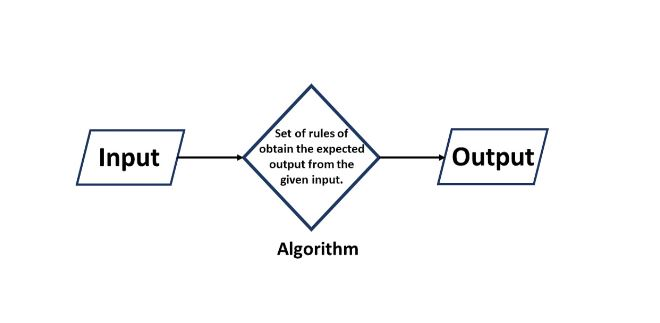
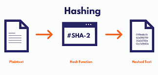

A
- Rendite
-
Der Ertrag einer Anlage, oft als Prozentwert.
- Liquide Vermögenswerte
-
Vermögenswerte, die sich schnell und mit geringem Wertverlust in Bargeld umwandeln lassen.
- Liquidität
-
Banken & Finanzmärkte: Die Fähigkeit, Vermögenswerte schnell in Bargeld umzuwandeln, ohne großen Preisabschlag.
Lightning‑Kanäle: Verfügbare ein- und ausgehende Kanal‑Kapazität, die bestimmt, ob Zahlungen gesendet oder geroutet werden können.
- Ledger
-
Ein Transaktions- oder Bestandsverzeichnis, das traditionell in Büchern geführt und im Bitcoin-Kontext digital geteilt wird.
- ACINQ
-
ACINQ ist ein französisches Unternehmen, das Bitcoin‑ und Lightning‑Infrastruktur entwickelt, bekannt für die Phoenix‑Mobile‑Wallet und den Betrieb eines der größten Lightning‑Routing‑Nodes.
Sie betreiben außerdem Eclair, eine Lightning‑Implementierung in Scala, und entwickeln Werkzeuge zur Verbesserung der Skalierbarkeit und Nutzbarkeit von Bitcoin‑Zahlungen.
- Blockerstellung / Block Creation
-
Der Prozess, bei dem validierte Transaktionen zu einem Block gebündelt und zur Blockchain hinzugefügt werden, typischerweise durch Mining.
- Air-Gapped / Luftschleuse
-
Informationen so aufzubewahren, dass sie niemals mit dem Internet verbunden sind.
- Zinsen
-
Der Preis für geliehenes Geld oder die Rendite auf Einlagen, meist als Jahresprozentsatz angegeben.
- Aktien
-
Aktien repräsentieren Eigentumsanteile an einem Unternehmen und geben Aktionären Anspruch auf Vermögen und Erträge. Renditen entstehen durch Kurssteigerungen und Dividenden (regelmäßige Ausschüttungen). Aktienkurse schwanken mit Unternehmensleistung und Marktlage, wodurch sie dynamisch und potenziell profitabel, aber auch risikobehaftet sind. Investitionen in Aktien erfordern Vertrauen in Institutionen und Dritte wie Broker und Finanzintermediäre, die Transaktionen korrekt abwickeln müssen; daraus ergibt sich Gegenparteirisiko, bei dem die Zuverlassigkeit dieser Akteure die Sicherheit der Anlage beeinflusst.
Der Begriff „Aktien“ wird oft gleichbedeutend mit „Equities“ verwendet.
- Algorithmus
-
Schritt‑für‑Schritt‑Verfahren, um ein Problem zu lösen oder ein Ziel zu erreichen.

Diagramm, das erklärt, was ein Algorithmus ist - Second‑Layer‑Lösung
-
Ein Protokoll, das auf einer Basis‑Blockchain aufsetzt und Transaktionen außerhalb der Haupt‑Chain verarbeitet, sich aber für endgültige Sicherheit und Abwicklung auf sie stützt.
- Angriffsvektor
-
Ein Verfahren oder Weg, den ein Angreifer nutzt, um eine Schwachstelle eines Systems auszunutzen, unbefugten Zugriff zu erlangen, Daten zu stehlen oder Abläufe zu stören.
- Anleihen
-
Anleihen sind Schuldtitel, die von Staaten oder Unternehmen zur Kapitalaufnahme ausgegeben werden. Der Emittent verpflichtet sich, den Nennwert zusammen mit Zinsen in festgelegten Intervallenzurückzuzahlen. Anleihen bieten Anlegern einen festen Ertrag und gelten im Allgemeinen als risikoärmer als Aktien. Anleihepreise können je nach Zinsniveau und Kreditqualität des Emittenten schwanken.
Beispiel einer realen Anleihe
Ein Beispiel ist eine US‑Staatsanleihe. So lassen sich die Bestandteile aufschlüsseln:
- Emittent: Die US‑Regierung, die die Anleihe zur Kapitalaufnahme ausgibt.
- Nennwert: Der geliehene Betrag, typischerweise 1.000 $ pro Anleihe, der bei Fälligkeitzurückgezahlt wird.
- Kuponzinssatz: Der feste jährliche Zinssatz, z. B. 2 % pro Jahr.
- Fälligkeit: Der Zeitpunkt, zu dem die Anleihe endet und der Nennwertzurückgezahlt wird (z. B. 10 Jahre nach Emission).
- Zinszahlungen: Halbjährliche Zahlungen an Anleihegläubiger, z. B. 10 $ alle sechs Monate für eine 1.000‑$‑Anleihe mit 2 % p. a.
Warum es „Anleihe“ heißt
Der Begriff „Bond/Anleihe“ leitet sich von der Idee einer bindenden Vereinbarung ab. Historisch galten Anleihen als Schuldverträge, in denen der Emittent die Rückzahlung des geliehenen Kapitals plus Zinsen zusagte. Diese „Bindung“ zwischen Emittent und Investor wurde rechtlich fixiert und bildet die Pflicht zur Zins‑ und Tilgungszahlung ab.
- Archiv‑Node
-
Im Bitcoin‑Kontext ist ein „Node“ ein Computer, der am Bitcoin‑Netzwerk teilnimmt, indem er Transaktionen validiert, eine Kopie der Blockchain hält und Informationen an andere Nodes weiterleitet. Nodes sichern die Integrität und Sicherheit des Netzwerks, indem sie Konsensregeln durchsetzen und Daten im Netzwerk verbreiten.
Ein Archiv‑Node ist ein Bitcoin‑Node, der die vollständige Historie der Blockchain speichert. Im Gegensatz zu einem Full Node, der alte Blöcke zur Speicherersparnis prunen kann, speichert ein Archiv‑Node jeden Block und jede jemals verarbeitete Transaktion — vom Genesis‑Block bis zum aktuellsten Block.
Merkmale:
- Umfassende Datenspeicherung: Speichert alle Blöcke und Transaktionen und liefert damit eine vollständige, unveränderte Historie der Blockchain.
- Erweiterter Datenzugriff: Optimiert für Abfragen und den Abruf historischer Daten — wertvoll für Forschung, Compliance und Analytik.
- Hoher Ressourcenbedarf: Benötigt viel Speicherplatz und Rechenleistung, um die umfangreichen Daten zu halten und zu verarbeiten.
Einsatzbereiche:
- Historische Analyse: Detaillierte Auswertung und Audits historischer Blockchain‑Daten.
- Datenservices: Umfassende Datendienste für Organisationen, die vollständige Blockchain‑Aufzeichnungen für Compliance oder fortgeschrittene Analysen benötigen.
Ä
B
- Backup
-
Eine Kopie von Daten, die genutzt wird, um Originaldaten nach einem Verlust wiederherzustellen.

Illustration eines Daten-Backups - Blockbelohnung
-
Die Summe aus neu geschaffenen Coins und Transaktionsgebühren, die ein Miner für das Erstellen eines gültigen Blocks erhält.
- Betriebssystem (OS)
-
Die Software, die die Hardware eines Computers verwaltet und grundlegende Dienste für Programme bereitstellt.
- Binär
-
Eine Binärzahl ist eine Zahl im Zahlensystem zur Basis 2, das nur zwei Symbole nutzt: typischerweise 0 und 1. Jede Stelle einer Binärzahl heißt Bit. Dieses System ist grundlegend für Computer und digitale Systeme, da sie mit Binärwerten rechnen und arbeiten.
Im Binärsystem repräsentiert jedes Bit eine Potenz von 2: Das rechteste Bit steht für 20, das nächste für 21, dann 22 usw. Zum Beispiel entspricht die Binärzahl 1011 der Dezimalzahl 11, berechnet wie folgt:
Binäre Berechnung:
- 1 × 23 = 8
- 0 × 22 = 0
- 1 × 21 = 2
- 1 × 20 = 1
Die Summe ergibt 8 + 0 + 2 + 1 = 11.
Binärzahlen sind in der Informatik essenziell, da digitale Elektronik zwei Zustände hat (an/aus bzw. 1/0). Das macht Binär zu einem effizienten und zuverlässigen System, um Daten in digitalen Geräten darzustellen.
Illustration von Binärzahlen - Zahlensystem zur Basis 2
-
Ein Zahlensystem mit nur zwei Symbolen (0 und 1), auch Binärsystem genannt.
- Bit
-
Die kleinste Informationseinheit in der Informatik, dargestellt als 0 oder 1.
- Binär‑zu‑Dezimal‑Umrechnung
-
Die Umrechnung einer Binärzahl in eine Dezimalzahl (also eine „normale“ Zahl) erfolgt, indem man eine Summe bildet, die davon abhängt, ob an einer bestimmten Stelle eine 0 oder 1 steht.
Die Position bestimmt, ob 0 oder 1 mit 2ⁿ multipliziert wird, wobei n der absteigenden Stellenposition entspricht (beginnend mit der Anzahl der Stellen minus 1).
Beispiel: 11100101001 wird wie folgt in Dezimal umgerechnet: (2¹⁰ × 1) + (2⁹ × 1) + (2⁸ × 1) + (2⁷ × 0) + (2⁶ × 0) + (2⁵ × 1) + (2⁴ × 0) + (2³ × 1) + (2² × 0) + (2¹ × 0) + (2⁰ × 1) = 1833
- BIP39 PBKDF2
-
BIP39 nutzt PBKDF2 (eine Key‑Derivation‑Funktion), um eine Seed‑Phrase und eine optionale Passphrase in einen Master Seed zu verwandeln. Dabei werden die Eingaben wiederholt gehasht, um Rateangriffe zu verlangsamen und dafür zu sorgen, dass kleine Änderungen (z. B. eine andere Passphrase) einen komplett anderen Master Seed erzeugen.
- Bitcoin Baselayer
-
Wird oft synonym zum Begriff Bitcoin‑Netzwerk verwendet.
Der Begriff „Bitcoin Baselayer“ bezeichnet die fundamentale Protokollschicht des Bitcoin‑Netzwerks, zu der Blockchain, Konsensregeln und die zugrunde liegende Netzwerk‑Infrastruktur gehören. Diese Schicht ist für die Kernfunktionen von Bitcoin verantwortlich, etwa:
- Transaktionsvalidierung und Transaktionsverteilung: Sicherstellen, dass alle Transaktionen den Konsensregeln folgen und korrekt im Netzwerk verbreitet werden.
- Blockerstellung / Block Creation und Mining: Der Prozess, bei dem neue Blöcke erstellt, validiert und der Blockchain hinzugefügt werden.
- Sicherheit und Integrität: Aufrechterhaltung der kryptografischen Sicherheit, die Integrität und Unveränderlichkeit der Blockchain gewährleistet.
Die Basisschicht liefert die zentralen Wertversprechen von Bitcoin, etwa Dezentralisierung, Sicherheit und Zensurresistenz.
- Rateangriffe
-
Angriffe, bei denen Geheimnisse wie Passwörter oder Seeds durch systematisches Ausprobieren vieler Möglichkeiten erraten werden.
- Bitcoin Core
-
Wird oft synonym mit Bitcoin‑Netzwerk verwendet.
„Bitcoin Core“ bezeichnet die Referenzimplementierung des Bitcoin‑Protokolls und ist der am weitesten verbreitete Software‑Client zur Interaktion mit dem Bitcoin‑Netzwerk. Bitcoin Core ist ein Open‑Source‑Projekt, das von einer Entwickler‑Community gepflegt wird und eine zentrale Rolle in der Entwicklung und Wartung der Bitcoin Baselayer spielt. Wichtige Aspekte von Bitcoin Core:
- Software‑Implementierung: Bitcoin Core ist eine Full‑Node‑Software, die Transaktionen und Blöcke validiert und an andere Nodes weiterleitet.
- Entwicklung und Updates: Bitcoin Core wird kontinuierlich verbessert, um Bugs zu beheben, Sicherheit zu erhöhen und neue Funktionen hinzuzufügen, während die Kompatibilität zum Protokoll erhalten bleibt.
- Wallet‑Funktionalität: Bitcoin Core enthält eine integrierte Wallet zum Senden, Empfangen und Speichern von Bitcoin.
Zusammengefasst ist die „Bitcoin Baselayer“ das grundlegende Protokoll und die Netzwerk‑Infrastruktur von Bitcoin, während „Bitcoin Core“ eine konkrete Implementierung dieses Protokolls als Software‑Client darstellt.
Visualisierung des Bitcoin-Netzwerks 
Netzwerkvisualisierung 2 - Bitcoin‑Konsensregeln
-
Bitcoin‑Konsensregeln sind vordefinierte Protokolle, denen alle Nodes im Netzwerk folgen müssen, um sich über die Gültigkeit von Transaktionen und Blöcken zu einigen. Diese Regeln stellen sicher, dass Transaktionen legitim sind, verhindern Double Spending und erhalten die Integrität der Blockchain. Durch die Einhaltung dieser Regeln einigen sich die Nodes auf den Zustand der Blockchain und sichern das Netzwerk gegen Betrug.
- Blockgrößenlimit: Jeder Block muss eine maximale Größe einhalten (typisch 1 MB), um übergroße Blöcke zu verhindern und die Netzwerkeffizienz zu sichern.
- Blockzeit: Blöcke werden ungefähr alle 10 Minuten gemined, um eine stabile Blockrate und Netzwerksynchronität zu gewährleisten.
- Proof of Work: Miner lösen ein kryptografisches Puzzle, um einen neuen Block hinzuzufügen und Rechenaufwand nachzuweisen.
- Schwierigkeitsanpassung: Die Mining‑Schwierigkeit wird etwa alle zwei Wochen (alle 2016 Blöcke) angepasst, um die durchschnittliche Blockzeit bei rund 10 Minuten zu halten.
- Transaktionsvalidierung: Transaktionen müssen gültig sein, inkl. korrekter Signaturen, richtiger Input‑Output‑Beziehungen und Einhaltung der Bitcoin‑Skriptsprache.
- Coinbase‑Transaktion: Jeder Block enthält eine spezielle Coinbase‑Transaktion, die neue Bitcoin und Gebühren an den Miner auszahlt.
- Double‑Spending‑Schutz: Transaktionen müssen auf ungenutzte Outputs verweisen, damit dieselben Bitcoin nicht mehrfach ausgegeben werden können.
- Kettenlänge: Die längste gültige Kette (mit der meisten akkumulierten Arbeit) gilt als korrekt und wird von den Nodes verfolgt.
- Skriptregeln: Bitcoin‑Transaktionen nutzen eine Skriptsprache, die festlegt, wie Bitcoin ausgegeben werden dürfen. Skripte müssen definierte Regeln einhalten.
- Merkle‑Baum‑Struktur: Transaktionen werden in einem Merkle‑Baum organisiert, um effiziente und sichere Verifikation im Block zu ermöglichen.
- Bitcoin‑Mining
-
Der Prozess, bei dem neue Bitcoin‑Transaktionen verifiziert und der Blockchain hinzugefügt werden. Miner erraten wiederholt Lösungen für ein kryptografisches Problem, um neue Blöcke zu erzeugen, das Netzwerk vor Betrug zu schützen und die Transaktionsintegrität sicherzustellen. Dieser Prozess verbraucht reale Energie und verknüpft Rechenarbeit mit dem Wert und Inhalt des Netzwerks. Als Belohnung erhalten Miner neu geschaffene Bitcoin und Transaktionsgebühren.
- Bitcoin‑Netzwerk
-
Wird oft synonym mit Bitcoin Core verwendet.
- Definition: Das dezentrale Netzwerk aus Nodes und Minern, die nach dem Bitcoin‑Protokoll arbeiten.
- Funktionen
- Block
-
Ein Block ist eine Gruppe von Bitcoin‑Transaktionen, die verifiziert und der Blockchain hinzugefügt wurden. Jeder Block enthält einen Verweis (Hash) auf den vorherigen Block, wodurch eine chronologische Kette entsteht. Außerdem enthält er einen Zeitstempel, Proof‑of‑Work und eine Belohnung für den Miner, der ihn erstellt hat. Blöcke sind die grundlegenden Einheiten des Bitcoin‑Ledgers.
- Blockchain
-
Im Bitcoin‑Kontext ist eine Blockchain ein dezentrales, öffentliches Ledger, das alle Bitcoin‑Transaktionen sicher und transparent aufzeichnet.
Sie besteht aus einer Reihe von Blöcken, die jeweils eine Liste von Transaktionen, einen Zeitstempel und einen eindeutigen kryptografischen Hash enthalten, der sie mit dem vorherigen Block verbindet. Diese Kettenstruktur sichert die Datenintegrität, da die Veränderung eines Blocks alle folgenden Blöcke verändern müsste, was rechnerisch praktisch unmöglich ist.
Die Bitcoin‑Blockchain wird von einem Netzwerk aus Nodes gepflegt und durch Mining gesichert, das Transaktionen validiert und neue Blöcke hinzufügt. Als Rückgrat von Bitcoin schafft die Blockchain Vertrauen und Nachvollziehbarkeit ohne eine zentrale Instanz.
- Boom‑Bust‑Zyklus
-
Ein Zyklus wirtschaftlicher Expansion gefolgt von einer Kontraktion, oft als Boom‑Bust‑Zyklus bezeichnet.
Österreichische Schule und Boom‑Bust‑Zyklen
Das Konzept der Boom‑Bust‑Zyklen wird besonders mit der Österreichischen Schule der Nationalökonomie verbunden. Österreichische Ökonomen argumentieren, dass diese Zyklen vor allem durch eine künstliche Manipulation von Zinsen und Geldmenge durch Zentralbanken entstehen. Werden Zinsen unter ihr natürliches Marktniveau gesenkt, führt dies zu übermäßigem Kreditaufbau und Investitionen — ein wirtschaftlicher „Boom“. Dieser Boom ist jedoch nicht nachhaltig, weil er nicht auf realen Ersparnissen oder tatsächlicher Nachfrage basiert. Schließlich korrigiert sich die Wirtschaft und es folgt der „Bust“, eine Phase der Rezession oder des Abschwungs.
Diese Sichtweise steht im Gegensatz zu anderen Schulen, z. B. dem Keynesianismus, die andere Ursachen und Lösungen für Konjunkturzyklen betonen.
Andere ökonomische Schulen zu Boom-Bust-Zyklen
- Keynesianische Ökonomie
- Sicht auf Boom und Bust: Keynesianer sehen Boom- und Bust-Zyklen als Teil des Wirtschaftsprozesses, führen sie aber vor allem auf Schwankungen der gesamtwirtschaftlichen Nachfrage zurück. In einem Boom führt hohe Nachfrage zu mehr Produktion, Beschaftigung und Preisen. Sinkt die Nachfrage, folgt ein Bust mit Rezession und Arbeitslosigkeit.
- Politische Antwort: Keynesianer befürworten aktive staatliche Eingriffe, um diese Zyklen zu glatten, etwa durch Fiskalpolitik (Staatsausgaben, Steueranpassungen) und Geldpolitik (z. B. Zinssteuerung).
- Monetaristische Ökonomie
- Sicht auf Boom und Bust: Monetaristen (z. B. Milton Friedman) sehen Boom-Bust-Zyklen vor allem als Folge einer Fehlsteuerung der Geldmenge. Eine zu schnelle Ausweitung durch Zentralbanken kann einen Boom auslosen, dem ein Bust folgt, wenn die Geldmenge verknappt wird.
- Politische Antwort: Monetaristen fordern eine Kontrolle des Geldmengenwachstums, idealerweise mit einem stabilen, vorhersehbaren Anstieg im Einklang mit dem Wirtschaftswachstum.
- Real Business Cycle (RBC)-Theorie
- Sicht auf Boom und Bust: Die RBC-Schule sieht Boom-Bust-Zyklen als naturliche Reaktion auf externe Schocks, z. B. Technologieänderungen oder Ressourcenverfügbarkeit, nicht primär als Folge monetarer Faktoren. Die Zyklen gelten als Anpassungsprozess der Wirtschaft.
- Politische Antwort: RBC-Vertreter sind oft gegen staatliche Eingriffe, da sich die Wirtschaft ihrer Ansicht nach von selbst anpasst und ohne externe Eingriffe ins Gleichgewicht zurückkehrt.
- Post-Keynesianische Ökonomie
- Sicht auf Boom und Bust: Post-Keynesianer betonen finanzielle Instabilität und die Rolle spekulativer Blasen. Sie argumentieren, dass Finanzmärkte von Natur aus instabil sind und zu Zyklen von übertriebenem Optimismus (Boom) und anschließender Panik und Kollaps (Bust) neigen.
- Politische Antwort: Post-Keynesianer fordern oft strengere Regulierung der Finanzmärkte sowie einen stärkeren Fokus auf Einkommensverteilung und Stabilitätsmaßnahmen, um solche Zyklen zu vermeiden.
- Neoklassische Ökonomie
- Sicht auf Boom und Bust: Neoklassiker erkennen Boom-Bust-Zyklen teilweise an, sehen sie jedoch als Anomalien oder Abweichungen vom marktwirtschaftlichen Gleichgewicht. Sie betonen die Selbstkorrektur der Märkte sowie die Rolle von Angebot und Nachfrage bei der Steuerung wirtschaftlicher Aktivität.
- Politische Antwort: Viele Neoklassiker bevorzugen minimale staatliche Eingriffe und vertrauen auf Marktmechanismen, obwohl einige in schweren Abschwungen Stabilisierungmaßnahmen befürworten.
- Keynesianische Ökonomie
- Börse
-
Eine Plattform oder ein Dienst, auf dem Kryptowährungen gehandelt oder gegen andere Vermögenswerte bzw. Währungen getauscht werden können.
C
- CEO
-
Chief Executive Officer, die ranghöchste Führungsperson in einem Unternehmen.

- Chain‑Analyse
-
Bitcoin‑Chain‑Analyse bezeichnet die Untersuchung und Interpretation der Blockchain, des öffentlichen Ledgers, das alle Bitcoin‑Transaktionen aufzeichnet. Dazu gehören das Nachverfolgen von Transaktionsflüssen, das Erkennen von Mustern und das Verknüpfen von Adressen, um Rückschlüsse auf Nutzerverhalten zu ziehen.
- Checksum / Prüfsumme
-
Eine Checksum oder Prüfsumme ist ein kleiner Datenblock, der aus einem anderen Datenblock abgeleitet wird, um Fehler zu erkennen, die bei Übertragung oder Speicherung entstehen können. Prüfsummen dienen häufig der Integritätsprüfung, nicht jedoch der Authentizitätsprüfung.
Wikipedia‑Eintrag zur Prüfsumme - Cleopatra (Programm, nicht die Königin)
-
Cleopatra ist ein Programm zur Verwaltung kryptografischer Schlüssel und Zertifikate. Es unterstützt die Erzeugung, Speicherung und Organisation von Schlüsseln für Verschlüsselung, Entschlüsselung und digitale Signaturen und bietet eine zentrale Plattform für sichere kryptografische Operationen in Organisationen oder für Einzelpersonen.
Cleopatra Wikipedia entry - Cold Wallet / Cold Storage
-
Eine Methode, Kryptowährungen offline zu speichern, um das Risiko von Hacking oder Diebstahl zu verringern.
- Counter Party Risk
-
Counter Party Risk oder Gegenparteirisiko ist das Risiko, dass die andere Partei einer finanziellen Transaktion oder eines Vertrags ihre Verpflichtungen nicht erfüllt. Dieses Risiko tritt in verschiedenen Kontexten auf, etwa bei Krediten, Derivaten oder Handel, wenn die Zuverlässigkeit der Gegenpartei den Ausgang der Transaktion beeinflusst. Effektives Management umfasst häufig die Prüfung der Kreditwürdigkeit, die Nutzung von Sicherheiten und Maßnahmen zur Risikoreduzierung.
D
- Deflation
-
Bitcoin hat eine feste Obergrenze von 21 Millionen und eine vorhersehbare Emissionspolitik. Mit der Zeit nimmt die Menge neuer BTC ab, weil neue Blöcke durch den Mechanismus der Difficulty‑Anpassung schwerer zu finden sind. Dadurch schrumpft das effektive Geldangebot von Bitcoin.
Das geschieht aus mehreren Gründen: Der Zufluss neuer BTC nimmt ab, während die Nutzerbasis wächst — neue Coins werden also knapper.
Zusätzlich gehen BTC verloren, wenn Schlüssel verloren werden oder Besitzer sterben, ohne sie weiterzugeben. Diese Coins werden dauerhaft unzugänglich und verringern das verfügbare Angebot weiter.
- Dezentralisiert
-
Nicht von einer einzelnen Einheit oder Autorität kontrolliert, sondern oft über ein Netzwerk von Nodes oder Teilnehmern verteilt.
- Dezentralisierung
-
Die Verteilung von Kontrolle oder Entscheidungsgewalt auf viele unabhängige Teilnehmer statt eine zentrale Instanz.
- Dezentralisierung
-
Die Verteilung von Kontrolle oder Entscheidungsgewalt auf viele unabhängige Teilnehmer statt eine zentrale Instanz.
- Diamond Hands
-
„Diamond Hands“ bezeichnet im Bitcoin‑Kontext Personen, die ihre Bitcoin trotz Volatilität oder Preisschwankungen mit starker Überzeugung halten — oft mit langfristigem Anlagehorizont. Sie sind durch konsequentes Festhalten an ihrer Strategie gekennzeichnet und verkaufen in unsicheren Phasen oder Abschwüngen seltener.
- Difficulty‑Anpassung
-
Das Difficulty‑Adjustment ist der Prozess, mit dem das Bitcoin‑Netzwerk automatisch die Schwierigkeit anpasst, einen neuen Block zu finden. Das geschieht alle 2.016 Blöcke (etwa alle zwei Wochen). Wurden Blöcke im vorherigen Zeitraum zu schnell gefunden, steigt die Schwierigkeit; waren sie zu langsam, sinkt sie. So bleibt die durchschnittliche Blockzeit nahe 10 Minuten — unabhängig von der vorhandenen Rechenleistung (Hashrate).
- Digital
-
Bezieht sich auf Technologien, die mit digitalen Daten arbeiten, häufig in Form von Binärcode (0 und 1).
- Double Spending
-
Double Spending ist ein mögliches Problem bei digitalen Währungen wie Bitcoin, bei dem eine einzelne Einheit theoretisch mehr als einmal ausgegeben werden könnte. Das entsteht, weil digitale Informationen leicht kopiert werden können. Ohne Schutzmechanismen könnte ein Nutzer versuchen, dieselben Bitcoin an mehrere Empfänger zu senden.
Wie Doppelausgaben entstehen
In traditionellen Finanzsystemen verhindern Vermittler wie Banken Doppelausgaben durch die Prüfung von Transaktionen. Bitcoin ist jedoch dezentral und hat keine zentrale Instanz, daher nutzt es andere Mechanismen, um dieses Problem zu verhindern.
Bitcoins Lösung gegen Doppelausgabe: Die Blockchain
Bitcoin löst das Doppelausgabe‑Problem mit einem dezentralen Ledger, der Blockchain. So funktioniert es:
- Transaktions‑Broadcast: Wenn eine Bitcoin‑Transaktion erstellt wird, wird sie an das gesamte Netzwerk der teilnehmenden Nodes (Computer) gesendet.
- Transaktions‑Verifizierung: Miner (Nodes, die Transaktionen validieren) sammeln unbestätigte Transaktionen aus dem Netzwerk und bündeln sie in einem Block. Jeder Miner versucht, ein kryptografisches Puzzle zu lösen; wer zuerst löst, darf seinen Block zur Blockchain hinzufügen.
- Blockchain‑Bestätigung: Sobald ein Block zur Blockchain hinzugefügt wird, gelten die darin enthaltenen Transaktionen als bestätigt. Die Blockchain ist eine Kette von Blöcken, wobei jeder Block kryptografisch mit dem vorherigen verknüpft ist. Eine Änderung würde das erneute Mining aller folgenden Blöcke erfordern, was praktisch unmöglich ist.
- Konsensmechanismus: Das Bitcoin‑Netzwerk folgt dem Konsensmechanismus, nach dem die längste gültige Blockchain (mit der meisten geleisteten Rechenarbeit) als maßgebliches Transaktionsregister gilt. Versucht jemand, denselben Bitcoin in zwei Transaktionen auszugeben, kann nur eine bestätigt und in die Blockchain aufgenommen werden. Die andere wird verworfen.
- Verhinderung der Doppelausgabe: Sobald eine Transaktion in der Blockchain enthalten ist und weitere Blöcke darüber liegen, gilt sie als zunehmend sicher. Das macht Doppelausgaben praktisch unmöglich, da der Aufwand zur Rückabwicklung exponentiell mit der Anzahl der nachfolgenden Blöcke steigt.
Beispiel für einen Doppelausgabe‑Versuch
- Szenario: Ein Nutzer sendet 1 Bitcoin an Händler A und Händler B.
- Ablauf: Beide Transaktionen werden ins Netzwerk gesendet, aber nur eine kann zuerst bestätigt und in die Blockchain aufgenommen werden.
- Ergebnis: Die zuerst bestätigte Transaktion ist gültig, die andere wird ungültig. Das Netzwerk erkennt den Doppelausgabe‑Versuch und lehnt die zweite Transaktion ab.
Bedeutung für Bitcoin
Die Verhinderung von Doppelausgaben ist entscheidend für die Integrität und Vertrauenswürdigkeit von Bitcoin als Währung. Ohne diesen Schutz könnten Nutzer den Wert der Währung untergraben, was zu Inflation und Vertrauensverlust führen würde. Blockchain und Konsensmechanismus stellen sicher, dass bestätigte Transaktionen endgültig sind und nicht rückgängig gemacht oder dupliziert werden können.
- Dust
-
Bitcoin‑Dust bezeichnet sehr kleine Bitcoin‑Beträge, die so winzig sind, dass sie sich wirtschaftlich nicht sinnvoll ausgeben lassen. Der Grund: Die Transaktionsgebühren sind höher als der Wert des Dust selbst. Technisch ist Dust ein Betrag unterhalb der Mindestgebühr, die nötig wäre, um eine Transaktion im Bitcoin‑Netzwerk zu verarbeiten.
Wichtige Punkte zu Bitcoin‑Dust
Definition und Schwelle
Als Dust gelten Beträge unterhalb einer Mindest‑Output‑Schwelle. Diese Schwelle hängt von Gebührenanforderungen ab und kann sich je nach Netzwerksituation ändern.
Ökonomische Unwirtschaftlichkeit
Das Hauptproblem: Das Senden kostet mehr als der Betrag selbst. Beispiel: 0,00000001 BTC (1 Satoshi) bei einer Gebühr von 0,0001 BTC — das Versenden wäre unsinnig, da die Gebühr den Wert übersteigt.
Entstehung von Dust
Dust kann sich aus Wechselgeld‑Outputs oder Mikrotransaktionen ansammeln, die früher wirtschaftlich waren, heute aber wegen höherer Gebühren nicht mehr.
Dust‑Limit
Bitcoin‑Nodes haben ein Dust‑Limit, unterhalb dessen Outputs als Dust gelten. Aktuell liegt es bei Standard‑Transaktionen typischerweise um 546 Satoshis (kann sich durch Richtlinien/Updates ändern).
Folgen für Nutzer
Dust kann Wallets unübersichtlich machen, die Verwaltung erschweren und künftige Transaktionen vergrößern, wenn viele Dust‑Outputs zusammengeführt werden.
Konsolidierung
Nutzer können Dust konsolidieren, indem sie mehrere kleine Outputs bei niedrigen Gebühren zu einem größeren Output zusammenfassen. Das bereinigt die Wallet und reduziert unspendbare Kleinstbeträge.
Beispiel
Sie erhalten 1.000 Satoshis (0,00001 BTC). Wenn die Gebühr 2.000 Satoshis (0,00002 BTC) beträgt, können Sie die 1.000 Satoshis praktisch nicht ausgeben, ohne Verlust zu machen. Damit werden die 1.000 Satoshis zu „Dust“ in Ihrer Wallet.
E
- ECDSA (Elliptic Curve Digital Signature Algorithm)
-
Ein kryptografischer Algorithmus zur Erstellung digitaler Signaturen in Bitcoin und anderen Kryptowährungen.
- EMT
-
Efficient Market Hypothesis, eine Theorie, die besagt, dass Finanzmärkte alle relevanten Informationen effizient einpreisen und widerspiegeln.
- Entropie
-
Im Kontext der Verschlüsselung beschreibt Entropie die Zufälligkeit und Unvorhersehbarkeit eines kryptografischen Schlüssels oder Datensatzes und damit die Resistenz gegen Raten oder Brute‑Force. Höhere Entropie bedeutet mehr mögliche Kombinationen und damit höhere Sicherheit. Systeme mit höher Entropie sind entscheidend für starke Verschlüsselung und den Schutz sensibler Daten.
- Erkennbar
-
Leicht identifizierbar oder unterscheidbar, oft verwendet, um Eigenschaften von Geld oder Vermögenswerten zu beschreiben.
F
- Fiatgeld
-
Eine staatlich ausgegebene Währung, die nicht durch einen physischen Rohstoff wie Gold oder Silber gedeckt ist.
Wie für Fünfjährige:
Stell dir vor, du hast einen Spielzeugladen und tauschst Spielzeug gegen glänzende Aufkleber. Statt Aufklebern benutzt ihr bunte Zettel mit Zahlen darauf. Diese Zettel nennt man Geld. Es gibt verschiedene Arten von Geld.
Fiatgeld sind solche Zettel, die alle als wertvoll ansehen. Sie sind aber nicht wertvoll, weil sie aus Gold oder Silber bestehen, sondern weil Menschen daran glaüben.
So wie du und deine Freunde euch auf die Aufkleber einigen, einigen sich alle im Land darauf, dass diese bunten Zettel als Geld gelten und man damit Dinge kaufen kann. Es ist wie ein großes Spiel mit gemeinsamen Regeln.
- Five‑Dollar‑Wrench‑Attack
- Eine Form physischer Nötigung/Erpressung, bei der ein Angreifer Gewalt androht, um Zugriff auf Krypto‑Bestände oder private Schlüssel zu erzwingen.
- Flash‑Speicher
-
Flash‑Speicher ist eine nicht‑flüchtige Speicherart, die Daten auch ohne Strom behält. Er speichert Daten über elektrische Ladungen in Speicherzellen und ermöglicht dadurch schnelle Zugriffszeiten, niedrigen Energieverbrauch und hohe Haltbarkeit.
Flash‑Speicher wird häufig verwendet in: SSDs (Solid State Drives), USB‑Sticks, SD‑Karten, Smartphones und Tablets.
Im Gegensatz zu klassischen Festplatten mit rotierenden Scheiben und Lese/Schreib‑Köpfen hat Flash‑Speicher keine beweglichen Teile, was Geschwindigkeit und Zuverlässigkeit erhöht.
- FOSS (Free Open Source Software)
- Software mit Lizenz, die es erlaubt, den Quellcode frei einzusehen, zu verändern und weiterzugeben.
- Fraktal
-
Definition nach Dictionary.com:
Substantiv
1. Mathematik, Physik. Eine unregelmäßige geometrische Struktur, die nicht durch klassische Geometrie beschrieben werden kann, weil die Vergrößerung wiederkehrende Muster ähnlich unregelmäßiger, aber zunehmend kleinerer Dimensionen zeigt: Fraktale sind besonders in natürlichen Formen und Phänomenen sichtbar, da die geometrischen Eigenschaften der physischen Welt weitgehend abstrakt sind, etwa bei Wolken, Kristallen, Baumrinde oder der Bahn von Blitzen.
2. Architektur, dekorative Kunst. Ein Design oder Bau, das das Konzept und die Mechanik der Fraktalgeometrie nutzt: Fraktale kennzeichnen die Fassade der Bibliothek und zeigen rekursive Muster, bei denen kleinere Teile die größeren spiegeln.

Adjektiv
1. Mathematik, Physik. zu einem Fraktal gehörend: fraktale Geometrie; fraktale Dimensionen; fraktale Kurven.
2. Architektur, dekorative Kunst. zu einem Design oder Bau gehörend, das die Fraktalgeometrie nutzt: Die Entwicklung der Formen von der Fernsicht bis zum feinsten Detail entsteht aus der fraktalen Komposition, die ihr Werk prägt.
Wortgeschichte und Herkunft
Erstmals 1975–80 belegt; aus dem Französischen fractale, entsprechend dem Lateinischen frāct(us) „gebrochen, uneben“ + -ale; fractus -al 2; der Begriff wurde 1975 vom französischen Mathematiker Benoit Mandelbrot (1924–2010) eingeführt.
- Freier Markt
-
Ein freier Markt ist ein Wirtschaftssystem, in dem Preise für Güter und Dienstleistungen durch offenen Wettbewerb und freiwilligen Tausch zwischen Individuen entstehen — ohne staatliche Eingriffe. Unternehmen und Verbraucher treffen eigenständig Entscheidungen über Produktion, Konsum und Investitionen. Angebot und Nachfrage regulieren den Markt und führen zu einer effizienten Ressourcenverteilung.
Staatliche Eingriffe und fehlende Marktfreiheit
- Geldpolitik und Zinsen: Zentralbanken beeinflussen Zinsen. Das verzerrt den natürlichen Marktzins, der in einem freien Markt durch Angebot und Nachfrage nach Geld entsteht.
- Quantitative Lockerung und Geldmenge: Zentralbanken erhöhen die Geldmenge (z. B. QE). Diese künstliche Ausweitung kann Preis‑Signale verzerren und zu Blasen/Inflation führen.
- Regulierung von Branchen: Vorschriften legen fest, wie Unternehmen arbeiten dürfen. Das kann Wettbewerb und Innovation einschränken.
- Subventionen und Rettungen: Staatliche Zuschüsse oder Bailouts stören den Wettbewerbsprozess; ineffiziente Unternehmen würden im freien Markt ausscheiden.
- Steuern und Zölle: Beeinflussen Entscheidungen von Unternehmen und Konsumenten und verzerren die Ressourcenallokation.
- Preiskontrollen: Eingriffe wie Mindestlohn oder Mietendeckel stören die Preisbildung von Angebot und Nachfrage.
- Gesetzliche Zahlungsmittel: Staaten schreiben Fiatgeld als gesetzliches Zahlungsmittel vor und erschweren alternative Tauschmittel.
- Zentralisierte Wirtschaftsplanung: Staatliche Eingriffe entscheiden, welche Branchen gefördert oder begrenzt werden — das untergräbt dezentrale Entscheidungen.
- Staatsmonopole: Staatlich geschützte Monopole verhindern Wettbewerb; im freien Markt bestehen Monopole nur bei echter Effizienz.
- Märkteintrittsbarrieren: Auflagen, Lizenzen und Hürden erschweren neuen Anbietern den Eintritt; ein freier Markt ermöglicht Ein‑ und Austritt.
- Freiheit
- Der Zustand, frei von Zwängen oder Einschränkungen zu sein, häufig verbunden mit persönlicher Freiheit oder Autonomie.
- Full Node
-
Definition
Ein Full Node ist ein Node im Bitcoin‑Netzwerk, der vollständig am Protokoll teilnimmt und zentrale Aufgaben für Integrität und Sicherheit übernimmt. Er lädt die gesamte Blockchain vom Genesis‑Block bis zum neuesten Block herunter, validiert sie und stellt die Einhaltung der Protokollregeln sicher.
Wichtige Funktionen
- Blockchain‑Validierung
- Vollständiger Download: Ein Full Node lädt und speichert die gesamte Blockchain inklusive aller Blöcke und Transaktionen.
- Verifizierung: Er prüft alle Transaktionen und Blöcke gegen die Konsensregeln und stellt sicher, dass keine Doppelausgaben vorliegen.
- Transaktions‑Weiterleitung
- Propagation: Full Nodes leiten Transaktionen und Blöcke an andere Nodes weiter und helfen, neue Daten im Netzwerk zu verbreiten.
- Netzwerksicherheit
- Durchsetzung der Regeln: Durch die Validierung aller Transaktionen und Blöcke setzen Full Nodes Konsensregeln durch und schützen das Netzwerk vor Betrug.
- Datenspeicherung
- Vollständige Historie: Full Nodes halten eine komplette Historie der Blockchain vor und können dadurch eine vollständige und genaue Transaktionshistorie bereitstellen.
Untertypen
- Pruned Full Node
- Beschreibung: Speichert nur einen Teil der Blockchain (insb. aktuelle Blöcke/Transaktionen), spart Speicher und validiert/weiterleitet dennoch Transaktionen.
- Nicht‑pruned Full Node
- Beschreibung: Speichert die komplette Blockchain‑ Historie. Bietet die vollständigsten Daten und unterstützt z. B. historische Analysen und Datenwiederherstellung.
Vorteile
- Netzwerkintegrität: Validieren alle Transaktionen und Blöcke und schützen so das Netzwerk.
- Dezentralisierung: Verteilen Blockchain‑Daten auf viele unabhängige Nodes.
- Datenverfügbarkeit: Vollständiger Zugriff auf die Blockchain‑Historie für Audits, Forschung und Analysen.
Zusammenfassung
Ein Full Node lädt, validiert und speichert die gesamte Blockchain. Er ist ein zentraler Baustein für Sicherheit, Regel‑Durchsetzung und den dezentralen Betrieb des Bitcoin‑Netzwerks.
- Blockchain‑Validierung
- Fungibilität
-
Im Kontext von Bitcoin, Gold und Fiatgeld bezeichnet Fungibilität die Eigenschaft eines Vermögenswerts, dass einzelne Einheiten austauschbar und ununterscheidbar sind.
Erklärung:
Bitcoin:
Fungibilität: Idealerweise ist jeder Bitcoin gleichwertig und gleich nutzbar. In der Praxis kann die Transaktionshistorie die Fungibilität beeinflussen: Coins aus illegalen Aktivitäten gelten mitunter als „verunreinigt“, wodurch Plattformen oder Personen sie ablehnen. Das beeinträchtigt die Fungibilität.
Gold:
Fungibilität: Gold gilt als hoch fungibel. Eine Unze mit bestimmter Reinheit ist wert‑ und funktionsgleich zu jeder anderen Unze gleicher Reinheit — unabhängig von Form oder Herkunft.
Fiatgeld:
Fungibilität: Fiatgeld wie US‑Dollar oder Euro ist ebenfalls fungibel. Jede Einheit (z. B. ein 20‑Euro‑Schein) gilt als gleichwertig zu anderen Einheiten derselben Stückelung. Diese Austauschbarkeit ist zentral für Geld als Tauschmittel.
Zusammenfassung:
Fungibilität bedeutet, dass Einheiten eines Vermögenswerts frei austauschbar sind, ohne dass ihre Historie oder Form berücksichtigt wird. Das ist entscheidend für die Funktion als Tauschmittel oder Wertspeicher.
G
- Gelddrucken
-
Der Prozess, durch den eine Regierung oder Zentralbank die Geldmenge erhöht, indem neues Bargeld oder digitales Geld geschaffen wird.
- Geldmarktfonds
-
Geldmarktfonds sind Investmentfonds, die in kurzfristige, risikoarme Finanzinstrumente wie Schatzanweisungen, Einlagenzertifikate und Commercial Paper investieren. Sie bieten meist höhere Liquidität als andere Anlagen und liefern in der Regel bessere Renditen als herkommliche Sparkonten, sind jedoch nicht staatlich versichert.
- Geldmenge
-
Die gesamte Geldmenge im Umlauf einer Volkswirtschaft, einschliesslich Bargeld, digitalem Geld und anderer liquider Vermogenswerte.
- Genesis‑Block
-
Der erste Block einer Blockchain, häufig fest im Protokoll verankert, der als Grundlage des gesamten Blockchain‑Systems dient.
Genesis‑Block: Der Genesis‑Block ist der erste Bitcoin‑Block (Block 0) und ist fest im System verankert. Er ist in der Bitcoin‑Core‑ Software hinterlegt und wird nicht aus dem Netzwerk geladen. Jeder Node startet mit diesem Block. Er hat keinen vorherigen Block, und seine Daten (Zeitstempel, Transaktionen, Hash usw.) sind fixiert — der gemeinsame Startpunkt der gesamten Blockchain.
- Girokonto
-
Girokonten sind hoch liquide Bankkonten für den täglichen Zahlungsverkehr, z. B. Rechnungen, Überweisungen oder Kartenzahlungen. Sie bieten in der Regel keine Zinsen, ermöglichen aber jederzeitigen Zugriff ohne Beschränkung der Anzahl von Abhebungen oder Überweisungen.
- GPG‑Schlüssel
-
Integrität mit SHASUMs: SHASUMs sind kryptografische Hash‑Funktionen, die eine feste Zeichenfolge erzeugen, die eindeutig zum Dateiinhalts passt. Durch Vergleich der bereitgestellten SHASUM mit der aus der heruntergeladenen Datei erzeugten SHASUM lässt sich prüfen, ob die Datei unverändert ist.
Authentizität mit PGP‑Schlüsseln: PGP‑Schlüssel werden genutzt, um digitale Signaturen zu erstellen und zu prüfen. Wird eine Datei mit einem privaten PGP‑Schlüssel signiert, kann der öffentliche Schlüssel genutzt werden, um die Herkunft der Datei zu verifizieren.
Ergänzende Sicherheit: Die Kombination aus SHASUMs und PGP‑Signaturen bietet umfassenden Schutz: SHASUMs sichern die Integrität, PGP‑Signaturen bestätigen Herkunft und Authentizität.
Nutzer‑Verifikation: Nutzer können die SHASUM selbst erzeugen und mit der veröffentlichten SHASUM vergleichen. Ebenso lässt sich die PGP‑Signatur mit dem öffentlichen Schlüssel prüfen.
Vertrauen und Zuverlässigkeit: Beide Methoden erhöhen Vertrauen in die Verteilung. Wird eine Methode kompromittiert, bietet die andere weiterhin Schutz, was Manipulation deutlich erschwert.
H
- Hal Finney
-
Ein Informatiker und fruher Cypherpunk, der an der Entwicklung von Bitcoin beteiligt war und die allererste Bitcoin-Transaktion von Satoshi Nakamoto erhielt.
- Handel
-
Handel in der Österreichischen Schule der Ökonomie
In der Österreichischen Schule bedeutet „Handel“ einen freiwilligen Tausch zwischen zwei Parteien, bei dem jede Seite etwas Wertvolles gegen etwas tauscht, das sie höher bewertet. Grundlage ist das Prinzip des subjektiven Werts, nach dem jede Partei Guter und Dienstleistungen unterschiedlich bewertet.
Wichtige Merkmale des Handels aus österreichischer Sicht:
- Freiwilligkeit: Der Austausch erfolgt freiwillig, ohne Zwang.
- Subjektiver Wert: Jede Partei bewertet das Erhaltene höher als das Gegebene, daher profitieren beide.
- Wechselseitiger Nutzen: Jede Seite glaubt, nach dem Tausch besser dazustehen.
- Marktkoordination: Viele Einzeltausche koordinieren Angebot und Nachfrage über Preissignale.
Dieses Konzept ist zentral für die Betonung individueller Wahl, Marktprozesse und subjektiven Werts in der österreichischen Ökonomie.
Handel in biblischen Begriffen
In biblischen Begriffen bezeichnet „Handel“ den Austausch von Gütern, Dienstleistungen oder Fähigkeiten zum gegenseitigen Nutzen. Handel erscheint in der Bibel vielfach als normaler Teil des Lebens und als Mittel zur Versorgung von Gemeinschaften und zum Aufbau von Beziehungen.
Wichtige Aspekte des Handels im biblischen Kontext:
- Handel und Austausch: Austausch von Gütern oder Dienstleistungen; in biblischer Zeit etwa Vieh, Ernten, Handwerkswaren oder andere Werte.
- Fairness und Gerechtigkeit: Die Bibel betont Gerechtigkeit im Handel, z. B. Levitikus 19:35-36 zu ehrlichen Waagen und Massen.
- Ethisches Verhalten: Handel soll ohne Betrug oder Ausbeutung erfolgen. Sprüche 11:1 warnt vor unlauteren Waagen.
- Gemeinschaft und Beziehungen: Handel fordert Beziehungen innerhalb von Gemeinschaften und zwischen Volkern und dient der Versorgung der Familie sowie dem Wohl anderer.
Insgesamt ist Handel in der Bibel zwar praktisch, aber eng mit moralischen und ethischen Prinzipien verknüpft – Ehrlichkeit, Gerechtigkeit und Gemeinschaft stehen im Mittelpunkt wirtschaftlicher Interaktionen.
- Hardware-Wallet
-
Ein physisches Gerät, das private Schlüssel von Kryptowährungen offline sicher speichert und damit gegenüber Software-Wallets erhöhte Sicherheit bietet.
- Hash
-
Chat‑GPT‑Erklärung für Kinder:
Stell dir eine magische Maschine vor, die „Hash‑Maschine“ heißt. Du kannst alles Mögliche hineinwerfen — ein Spielzeug, ein Bonbon oder einen Zettel mit Wörtern. Wenn du etwas hineinlegst, gibt dir die Maschine einen speziellen Geheimcode, ähnlich wie ein supergeheimes Passwort.
Eindeutiger Code: Wenn du dasselbe erneut hineinlegst, bekommst du immer denselben Geheimcode. Änderst du aber nur eine Kleinigkeit (z. B. ein Wort), bekommst du einen völlig anderen Code.
Einbahnstraße: Aus dem Geheimcode kannst du nichtzurückrechnen, was du hineingelegt hast. Es ist wie eine Einbahnstraße — hinein geht, hinaus nicht.
Schnell und gleich groß: Egal wie groß oder klein das Eingabeding ist — der Geheimcode ist immer gleich lang. Und die Maschine ist super schnell!
Kryptografische Hashes sind wie diese Geheimcodes. Sie helfen, Dinge sicher zu machen — zum Beispiel Passwörter zu schützen oder zu prüfen, ob eine Nachricht verändert wurde. So wie die Hash‑Maschine schützen sie Geheimnisse und sorgen für Sicherheit.

- Hashrate
-
Die Hashrate bezeichnet die gesamte Rechenleistung, die Miner im Proof‑of‑Work‑Prozess einsetzen. Eine höhere Hashrate bedeutet mehr Netzwerksicherheit, da Manipulationen an der Blockchain dadurch schwieriger werden.
- Hermann Hoppe
-
Österreichischer Ökonom und libertärer Philosoph, bekannt für Arbeiten zu Demokratie, Ethik und Ökonomie, darunter seine Demokratikritik und die Befürwortung privatrechtlicher Gesellschaften.
- HODL
-
Eine absichtliche Falschschreibung von „hold“, entstanden in der Krypto‑Community, um das Halten von Assets statt Verkaufen zu fördern — besonders in Abschwüngen. Oft gelesen als „Hold on for dear life“.
- HODLER
-
Ein Bitcoiner, der HODLt. Hold on for dear life.
- „Du lässt diese Satoshis wirklich nicht los, oder? Selbst wenn Blackrock bei 70k kauft?“ – „Ja, ich bin ein HODLER, kein Idiot.“
- Hot Wallet
-
Eine Kryptowallet, die mit dem Internet verbunden ist und für Bestände genutzt wird, auf die häufig zugegriffen oder die aktiv gehandelt werden.
I
- Internet
-
Wichtige Protokolle des Internets
- Transmission Control Protocol (TCP): Stellt eine zuverlässige, geordnete und fehlergeprüfte Datenübertragung zwischen Anwendungen sicher, indem Daten in Pakete zerlegt und am Ziel wieder zusammengesetzt werden.
- Internet Protocol (IP): Kümmert sich um Adressierung und Routing von Datenpaketen, damit sie über Netzwerke zum richtigen Ziel gelangen. IP vergibt eindeutige Adressen an Geräte.
- Hypertext Transfer Protocol (HTTP): Überträgt Webseiten und Inhalte von Webservern zu Browsern. Definiert Format, Übertragung und Reaktionen auf Anfragen.
- Hypertext Transfer Protocol Secure (HTTPS): Erweiterung von HTTP mit verschlüsselter Kommunikation (TLS/SSL) zwischen Browser und Server.
- File Transfer Protocol (FTP): Überträgt Dateien zwischen Client und Server; unterstützt Upload/Download und Verzeichnisverwaltung.
- Post Office Protocol (POP3): Ruft E‑Mails vom Server ab, lädt sie auf das Gerät und entfernt sie meist vom Server.
- Internet Message Access Protocol (IMAP): Ermöglicht E‑Mail‑Zugriff und ‑Organisation direkt auf dem Server; synchronisiert über mehrere Geräte.
- Dynamic Host Configuration Protocol (DHCP): Vergibt automatisch IP‑Adressen und Netzwerkkonfiguration an Geräte.
- Domain Name System (DNS): Übersetzt lesbare Domainnamen (z. B. www.example.com) in IP‑Adressen.
- Simple Mail Transfer Protocol (SMTP): Regelt das Senden von E‑Mails zwischen Client und Servern sowie die Weiterleitung ausgehender Nachrichten.
- IP-Adresse
-
Eine numerische Adresse, die einem Gerät im Netzwerk zugewiesen wird und die Identifikation sowie Weiterleitung von Daten ermöglicht (z. B. IPv4/IPv6).
- Unveränderlichkeit
-
Die Eigenschaft, dass Daten nach dem Aufzeichnen nur sehr schwer verändert werden können.
- Investmentfonds
-
Ein Investmentfonds ist ein Anlagevehikel, in das viele Anleger Geld einzahlen, das dann von Profis in ein diversifiziertes Portfolio aus Aktien, Anleihen oder anderen Wertpapieren investiert wird. Er ermöglicht Zugang zu einer breiten Palette von Anlagen mit relativ geringen Mindesteinlagen und verteilt das Risiko über das gesamte Portfolio. Anleger müssen dem Management vertrauen, tragen erhebliches Drittrisiko und haben meist nur periphere Informationen über die Unternehmen und Vermögenswerte, in die investiert wird.
- ISP – Internet Service Provider
-
Ein Internet Service Provider ist das Unternehmen, das Ihren Internetzugang bereitstellt. Es weist Ihnen eine IP‑Adresse zu und kann Metadaten über Ihre Online‑Aktivität sehen, z. B. zu welchen Servern Sie sich verbinden.
J
K
- Keynesianische Ökonomie
-
Eine ökonomische Theorie, die staatliche Eingriffe in die Wirtschaft befürwortet, um Stabilität und Wachstum zu fördern.
- Knappheit
-
Wenn das Angebot eines Vermogenswerts begrenzt und geringer als die Nachfrage ist, gilt er als knapp.
- Konsensregeln
-
In Bitcoin sind Konsensregeln strenge Protokollregeln, denen alle Full Nodes folgen, um sich darauf zu einigen, welche Transaktionen und Blöcke gültig sind. Sie definieren die Kernlogik von Bitcoin — etwa Blockgrößenlimits, wie neue Coins entstehen und was eine Transaktion gültig macht. Bricht ein Node diese Regeln, wird seine Version der Blockchain vom restlichen Netzwerk abgelehnt.
Beispiele:
- Blockgrößenlimit: Ein Block darf maximal 4 Millionen Weight Units haben (vor SegWit grob 1 MB).
- Block‑Reward‑Zeitplan: Die Belohnung halbiert sich alle 210.000 Blöcke (~4 Jahre).
- Proof‑of‑Work‑Anforderung: Jeder Block muss einen gültigen SHA‑256‑Hash unter dem aktuellen Difficulty‑Ziel haben.
- Gültige Transaktionsstruktur: Inputs und Outputs müssen korrekt formatiert sein.
- Kein Double Spending: Derselbe Input kann nicht zweimal ausgegeben werden.
- Signaturprüfung: Jede Transaktion benötigt gültige kryptografische Signaturen, die Eigentum an den Inputs nachweisen.
- Coin‑Supply‑Cap: Die Gesamtmenge ist auf 21 Millionen Bitcoin begrenzt.
- Sequenz‑ und Zeitstempelregeln: Blöcke müssen auf den vorherigen Block verweisen und gültige Zeitstempel haben.
Bitcoin‑Konsensregeln sind keine einfache nummerierte Liste — sie umfassen Hunderte präziser Bedingungen im Bitcoin‑Core‑Code. Jede Regel stellt sicher, dass alle Nodes sich darüber einig sind, welche Blöcke und Transaktionen gültig sind. Diese Regeln lassen sich in mehrere Hauptkategorien einteilen:
- Blockregeln: Definieren, wann ein Block gültig ist, z. B. maximale Blockgröße (4 Millionen Weight Units), korrekte Verknüpfung mit dem vorherigen Block, gültige Zeitstempel und eine gültige Merkle‑Root.
- Transaktionsregeln: Legen fest, wann eine Transaktion gültig ist — z. B. korrekt formatierte Inputs/Outputs, kein Double Spending und eine gültige Struktur für Coinbase‑Transaktionen.
- Skript‑ und Signaturregeln: Regeln die Skriptsprache. Jeder Input braucht ein gültiges Skript und eine Signatur, die das Eigentum an den Coins nachweist.
- Proof‑of‑Work‑Regeln: Stellen sicher, dass jeder Block einen SHA‑256‑Hash unter dem aktuellen Difficulty‑Ziel enthält und damit Sicherheit durch Rechenaufwand bietet.
- Monetäre Regeln: Steuern Angebot und Emission — inklusive 21‑Millionen‑Limit und Halving alle 210.000 Blöcke.
- Sequenz‑ und Locktime‑Regeln: Regeln, wann Transaktionen oder Blöcke
- Konzept: Zoom Out
-
Ein Ansatz zur Problemlösung, bei dem der größere Kontext und das Gesamtbild berücksichtigt werden.
Langfristige Perspektive
- Technologie und Adoption: Bitcoin ist ein dezentrales Ledger, das Transaktionen sicher aufzeichnet.
- Wertversprechen: Als „Truth Machine“ sorgt es für Transparenz und Unveränderlichkeit.
Wesentliche Eigenschaften
- Dezentralisierung: Funktioniert ohne zentrale Instanz und stärkt Vertrauen.
- Sicherheit: Nutzt kryptografische Prinzipien zum Schutz der Daten.
- Angebotsgrenze: Feste Obergrenze von 21 Millionen Bitcoin, sorgt für Knappheit.
Vorteile des Herauszoomens
- Innovation: Fokus auf technologische Fortschritte und zunehmende Adoption.
- Stabilität über Zeit: Trotz kurzfristiger Schwankungen wächst die Nutzerbasis und Akzeptanz langfristig.
Historische Trends
- Adoptionskurve: Immer mehr Personen und Institutionen übernehmen Bitcoin im Zeitverlauf.
- Nutzen und Anwendungsfälle: Wachstum realer Anwendungen wie Remittances und digitale Verträge.
Durch das Herauszoomen konzentrieren Sie sich auf Bitcoins Rolle als transformative Technologie und seine dauerhafte Bedeutung als dezentrales Ledger.
- Krypto‑Winter
-
Eine Phase anhaltenden Rückgangs oder Stillstands in den Kryptomärkten, häufig gekennzeichnet durch fallende Preise und geringere Handelsaktivität.
- Köder‑Wallets
-
Wallets mit unterschiedlichen Bitcoin‑Beträgen, die einen Angreifer glaüben lassen, der Diebstahl sei erfolgreich gewesen und er habe den Großteil des Vermögens erbeutet. Die Ausgestaltung kann je nach Situation stark variieren — es kann mehrere Köder‑Wallets geben oder nur eine besonders glaubwürdige.
- Sie besitzen 0,5 Bitcoin (50.000.000 Satoshis). Ihr Setup könnte so aussehen:
- 200.000 Satoshis für den Alltag (Einkaufen, Essen gehen).
- 5.000.000 Satoshis in einer Zwischen‑Wallet zu Hause für größere Online‑/Offline‑Käufe.
- 40.000.000 Satoshis im Cold Storage für sehr große Käufe.
- 4.800.000 Satoshis in einer Köder‑Wallet, die Sie bei Erpressung herausgeben oder die bei einem Einbruch leichter gefunden werden kann.
- Sie besitzen 0,5 Bitcoin (50.000.000 Satoshis). Ihr Setup könnte so aussehen:
L
- Leichter SPV‑Node
-
Ein Lightweight‑Node, auch SPV‑Node (Simplified Payment Verification), ist ein Bitcoin‑Node mit geringen Ressourcenanforderungen. Anders als Full Nodes lädt er nicht die gesamte Blockchain und validiert sie vollständig, sondern verlässt sich auf Full Nodes.
Wichtige Merkmale eines SPV‑Nodes:
- Effizienz: Benötigt deutlich weniger Speicher und Rechenleistung als Full Nodes — ideal für Geräte mit wenig Ressourcen (z. B. Smartphones).
- Teilweiser Blockchain‑Download: Lädt nur Block‑Header (ca. 80 Bytes) statt kompletter Blöcke mit allen Transaktionen — das spart massiv Daten.
- Abhängigkeit von Full Nodes: SPV‑Nodes validieren nicht vollständig und fragen Full Nodes nach der Aufnahme von Transaktionen; Merkle‑ Beweise prüfen die Inclusion ohne vollständigen Block.
- Privacy‑Abwägung: SPV‑Nodes sind zugänglicher, aber weniger privat und sicher, da sie den Full Nodes vertrauen müssen.
Einsatzbereiche:
- Mobile Wallets: Viele mobile Wallets nutzen SPV, um Transaktionen schnell zu prüfen, ohne Full‑Node‑Ressourcen zu benötigen.
- Ressourcenarme Umgebungen: Geräte mit wenig CPU, Speicher oder Bandbreite (z. B. IoT) können SPV‑Nodes nutzen.
So funktioniert SPV:
- Ein SPV‑Node lädt zunächst die Block‑Header der längsten Kette.
- Um die Aufnahme einer Transaktion zu prüfen, fragt er Full Nodes nach dem passenden Header und dem Merkle‑Pfad.
- Mit dem Merkle‑Beweis prüft er die Zugehörigkeit zur Block‑Transaktion ohne den gesamten Block herunterzuladen.
Zusammengefasst ist ein SPV‑Node eine leichte Möglichkeit, mit dem Bitcoin‑ Netzwerk zu interagieren — effizient und zugänglich, aber mit Abstrichen bei Privatsphäre und Sicherheit. Beliebt bei mobilen Wallets und ressourcenbeschränkten Geräten.
- Lightning‑Netzwerk
-
Eine Second‑Layer‑Lösung für Bitcoin, die schnelle und skalierbare Off‑Chain‑Transaktionen ermöglicht.
- Off‑Chain‑Transaktionen: Transaktionen laufen außerhalb der Haupt‑Blockchain und entlasten diese.
- Zahlungskanäle: Nutzer eröffnen Kanäle und können viele Transaktionen privat und schnell abwickeln, ohne jede einzelne on‑chain zu senden.
- Micropayments: Ermöglicht Kleinstzahlungen, die auf der Basisschicht wegen höher Gebühren und langsamer Bestätigung unpraktisch wären.
- Lightning‑Node
-
Ein Lightning‑Node ist ein Node im Lightning‑Netzwerk, einer Second‑Layer‑Lösung für schnelle und günstige Off‑Chain‑Transaktionen. Überblick der Funktionen:
Wichtige Funktionen
- Kanalverwaltung: Lightning‑Nodes eröffnen und verwalten Zahlungskanäle für schnelle, günstige Transaktionen.
- Routing: Sie leiten Zahlungen durch das Lightning‑Netzwerk, wodurch Transaktionen nahezu instant und mit minimalen Gebühren möglich sind.
- Netzwerkkonnektivität: Halten Verbindungen zu anderen Nodes, um Zahlungen zu ermöglichen und Kanalzustände zu aktualisieren.
Vorteile
- Geschwindigkeit: Nahezu sofortige Transaktionen, da Off‑Chain‑Abwicklung.
- Niedrige Gebühren: Deutlich geringere Gebühren als On‑Chain‑Transaktionen.
- Listening Node
-
Ein Listening Node ist ein Bitcoin‑Node, der so konfiguriert ist, dass er eingehende Verbindungen von anderen Nodes akzeptiert. Er unterstützt die Kommunikation und Datenverteilung im Netzwerk.
Wichtige Funktionen
- Verbindungsannahme: Akzeptiert eingehende Verbindungen und ermöglicht aktive Teilnahme am Netzwerk.
- Datenverteilung: Leitet Transaktionen und Blöcke an Peers weiter.
- Netzwerksynchronisation: Hält sich mit anderen Nodes auf dem aktuellen Stand.
Vorteile
- Bessere Konnektivität: Erhöht die Erreichbarkeit und Datenverteilung im Netzwerk.
- Mehr Robustheit: Stärkt die Zuverlässigkeit des Bitcoin‑ Netzwerks durch bessere Propagation und Konnektivität.
M
- M2-Liquidität
-
Monetäre M2-Liquidität bezeichnet ein Maß der Geldmenge, das sowohl Bargeld als auch leicht zugängliche Einlagen (z. B. Giro- und Sparkonten) sowie geldnahe Anlagen wie Geldmarktfonds und Termineinlagen umfasst. Sie beschreibt den Teil der Geldmenge, der schnell in Bargeld umgewandelt oder für Ausgaben genutzt werden kann, und zeigt damit die verfügbare Gesamtliquidität einer Volkswirtschaft. M2 ist ein wichtiger Indikator für Zentralbanken und Ökonomen, um Inflationspotenzial und Wirtschaftstätigkeit zu bewerten.
- Master Seed
-
Das Wurzelgeheimnis, das aus Seed‑Phrase und optionaler Passphrase abgeleitet wird und zur Ableitung von Wallet‑Schlusseln dient.
- Neu geschaffene Coins
-
Neu erzeugte Coins, die vom Protokoll als Teil der Blockbelohnung ausgegeben werden.
- Machtprojektion
-
Machtprojektion beschreibt die Fähigkeit eines Staates, durch militärische oder wirtschaftliche Stärke Ereignisse in anderen Regionen zu beeinflussen oder zu kontrollieren. Dazu gehören das Entsenden von Truppen, das Demonstrieren militärischer Fähigkeiten und das Ausüben von Einfluss zur Abschreckung von Aggression sowie zur Unterstützung von Verbundeten. Das Konzept unterstreicht die Bedeutung einer globalen Präsenz und der Bereitschaft, Macht bei Bedarf zu projizieren.
Physische Machtprojektion
Physische Machtprojektion nutzt greifbare militärische Mittel, um weltweit Einfluss auszuüben. Dazu gehören:
- Militarbasen: Aufbau und Unterhalt von Basen weltweit zur Erweiterung der strategischen Reichweite.
- Seeflotten: Einsatz von Schiffen in Schlüsselregionen zur Projektion maritimer Stärke.
- Luftstreitkrafte: Einsatz von Luftfahrzeugen für schnelle Verlegung und Unterstützungsoperationen.
- Bodentruppen: Stationierung von Truppen an strategischen Orten zur Stabilisierung und Abschreckung.
Diese Massnahmen stellen sicher, dass ein Staat schnell auf Bedrohungen reagieren und seine geopolitischen Interessen wahren kann.
Machtprojektion im Bitcoin-Netzwerk
Machtprojektion im Bitcoin-Netzwerk bedeutet, Rechenressourcen einzusetzen, um die Blockchain zu sichern. Das ist eine Form physischer Macht, die digital gebunden wird:
- Mining: Energieintensive Prozesse zur Validierung von Transaktionen und Sicherung des Netzwerks durch Rechenarbeit.
- Hashrate: Zeigt die gesamte Rechenleistung und damit das Sicherheitsniveau des Netzwerks.
- Proof of Work: Belegt den Energieaufwand und die Rechenarbeit, sorgt für Konsens und verhindert Betrug.
Diese digitale Machtprojektion verwandelt physische Energie in kryptografische Sicherheit und erhalt die Integrität und das Vertrauen in das Bitcoin-Netzwerk.
- Marktbestimmtes Geld
-
Eine Geldform, deren Wert durch Marktkräfte wie Angebot und Nachfrage bestimmt wird, statt von einer zentralen Instanz festgelegt oder reguliert zu werden.
- Merkhilfe (Mnemonic)
-
1. Eine Merkhilfe ist ein Mittel, etwa ein Muster aus Buchstaben, Ideen oder Assoziationen, das beim Erinnern hilft.
2. Eine Technik zur Unterstützung von Erinnern und Abrufen, z. B. Akronyme, Reime oder Bilder. Beispiel: „Every Good Boy Deserves Fruit“ hilft beim Merken der Notenlinien im Violinschlüssel (E, G, B, D, F).
- Merkle-Baum
-
Was ist ein Merkle-Baum?
Ein Merkle-Baum, auch Hash-Baum genannt, ist eine Datenstruktur, die in der Informatik und Kryptografie verwendet wird, um die Integrität großer Datenmengen effizient und sicher zu verifizieren.
- Struktur: Ein Merkle-Baum ist ein binarer Baum, in dem jedes Blatt einen Hash eines Datenelements (z. B. einer Transaktion) darstellt. Nicht-Blätter sind die Hashes ihrer Kindknoten, wobei der Root-Knoten der Hash aller anderen Hashes im Baum ist.
- Zweck: Er ermöglicht die effiziente und sichere Verifikation der Datenintegrität. Durch den Vergleich des Root-Hashes kann man prüfen, ob Daten verändert wurden, selbst wenn sie verteilt gespeichert sind.
- Einsatz in Bitcoin: In Bitcoin werden Merkle-Bäume genutzt, um Transaktionen innerhalb eines Blocks zu organisieren. Der Merkle-Root (der oberste Hash) ist im Block-Header enthalten. So lassen sich Transaktionen effizient prüfen, weil jede Änderung den Merkle-Root verändert und damit Manipulation signalisiert.
Siehe Keifer Kifs' Erklärung zu Merkle-Bäumen:
Video- Erklärung
- Metadaten
-
Daten über Daten — Informationen, die Aktivitäten beschreiben (z. B. Zeitstempel, IP‑Adresse, Gerätetyp, Verbindungsdetails), ohne den eigentlichen Inhalt zu zeigen.
- Michael Saylor
-
CEO von MicroStrategy, einem börsennotierten Business‑Intelligence‑Unternehmen, bekannt für seine starke Unterstützung von Bitcoin.
- Key‑Derivation‑Funktion
-
Eine Funktion, die aus Eingaben wie Passwort oder Seed einen kryptografischen Schlussel ableitet und dabei meist Hashing und viele Iterationen nutzt, um Rateangriffe zu erschweren.
- Miner
-
Eine Person oder Organisation, die Transaktionen in einem Blockchain‑Netzwerk validiert und verarbeitet.
- Mining‑Node
-
Ein Mining‑Node ist ein Bitcoin‑Full‑Node, der am Mining neuer Blöcke teilnimmt. Mining bedeutet, komplexe mathematische Aufgaben zu lösen, um Transaktionen zu validieren und der Blockchain hinzuzufügen. Wichtige Aspekte:
Wichtige Funktionen
- Block‑Mining: Mining‑Nodes konkurrieren beim Lösen kryptografischer Rätsel. Wer zuerst löst, darf den Block hinzufügen und erhält Blockbelohnungen sowie Gebühren.
- Transaktionsvalidierung: Prüft Transaktionen vor Aufnahme in neue Blöcke gemäß Konsensregeln.
- Netzwerkbeteiligung: Trägt durch kontinuierliches Mining zur Sicherheit und Stabilität des Netzwerks bei.
Vorteile
- Belohnungen: Miner erhalten Blockbelohnungen und Gebühren als Ausgleich für Rechenleistung.
- Netzwerksicherheit: Mining schützt vor Angriffen und Doppelausgaben.
- Mnemonische Seed‑Phrase
-
Die Seed‑Phrase gilt als „mnemonisch“, weil sie eine Abfolge leicht merkbarer Wörter nutzt, um den komplexen kryptografischen Schlüssel zur Wallet wiederherzustellen. Der Schlüssel liegt binär vor (1 und 0) und kann als Buchstaben/Zahlen, QR‑Code oder als Wortliste dargestellt werden — die Seed‑Phrase.

- Multi-Signature (Multisig)
-
Eine Bitcoin-Funktion, die mehrere Signaturen zur Autorisierung einer Transaktion erfordert und damit eine zusätzliche Sicherheitsebene bietet. Das bedeutet, dass mehrere private Schlüssel, die von verschiedenen Parteien oder Geräten gehalten werden, zustimmen müssen, bevor die Transaktion auf der Blockchain ausgeführt werden kann.
N
- Node
-
Ein Computer oder Gerät in einem Blockchain-Netzwerk, der zur Aufrechterhaltung des Netzwerks beitragt, indem er Transaktionen validiert und weiterleitet.
- Non-Custodial- Wallets
-
Kryptowallets, bei denen der Nutzer die volle Kontrolle und das Eigentum an den privaten Schlüsseln behält.
O
- OPSEC (Operative Sicherheit)
-
Operative Sicherheit: der Prozess, Risiken zu erkennen und zu reduzieren, um Vertraulichkeit, Integrität und Verfügbarkeit sensibler Informationen und Ablaufe zu wahren.
Ö
- Öffentlicher Schlüssel
-
Ein kryptografischer Schlüssel, der in asymmetrischen Verschlüsselungssystemen zum Verschlüsseln von Nachrichten oder zum Prüfen von Signaturen verwendet wird.
- Österreichische Schule der Nationalökonomie
-
Wirtschaftsschule, die Individualismus, freie Märkte und begrenzten staatlichen Eingriff betont.
Methodologischer Individualismus: Ökonomische Phänomene sind das Ergebnis individueller Handlungen. Nur Individuen treffen Entscheidungen, nicht Gruppen oder Kollektive.
Subjektive Wertlehre: Wert ist subjektiv und variiert zwischen Individuen. Er wird durch persönliche Präferenzen bestimmt, nicht durch eine innere Eigenschaft von Gütern oder Dienstleistungen.
Grenznutzen: Der Wert eines Gutes oder einer Dienstleistung wird durch den Grenznutzen bestimmt, also die zusätzliche Zufriedenheit durch den Konsum einer weiteren Einheit.
Zeitpräferenz: Menschen bevorzugen gegenwärtigen Konsum gegenüber zukünftigem Konsum — daraus entsteht der Zins als Preis der Zeit.
Menschen bevorzugen in der Regel etwas jetzt zu haben, statt später. Das liegt daran, dass sie es sofort nutzen können, was oft als wertvoller empfunden wird als zu warten.
Stellen Sie sich vor, jemand bietet Ihnen 100 $ heute oder 100 $ in einem Jahr an. Die meisten würden das Geld heute wählen, weil sie es sofort verwenden können — etwa um etwas zu kaufen oder zu investieren.
Diese Präferenz, Dinge früher statt später zu haben, nennt man „Zeitpräferenz“. Sie ist ein wichtiges Konzept der Ökonomie, weil sie erklärt, warum Menschen bereit sind, Zinsen auf Kredite zu zahlen. Wer Geld leiht, sagt im Kern: „Ich schätze dieses Geld jetzt mehr, als später etwas mehr zu zahlen.“
Spontane Ordnung: Märkte erzeugen eine spontane Ordnung, in der die Koordination individueller Handlungen zu einer effizienten Ressourcenallokation führt — ohne zentrale Planung.
Unternehmertum: Unternehmer treiben wirtschaftlichen Fortschritt durch Innovation, Risikobereitschaft und die Reaktion auf Marktsignale an.
Handlungsaxiom: Menschliches Handeln ist zielgerichtetes Verhalten, das auf bestimmte Zwecke abzielt; Individuen treffen Entscheidungen, um ihren Nutzen zu maximieren.
Unsicherheit und Wissen: Ökonomische Entscheidungen werden unter Unsicherheit getroffen; Wissen ist verteilt und subjektiv, was zentrale Planung ineffektiv macht.
Kritik an Empirie und formaler Modellierung: Die Österreichische Schule ist skeptisch gegenüber empirischen und statistischen Methoden in der Ökonomie und betont stattdessen logisches Denken und apriorische Deduktion aus Grundaxiomen.
P
- Papierhände
-
Im Kontext von Bitcoin-Marktteilnehmern bezeichnet „Papierhände“ Personen, die ihre Bitcoin-Bestände bei Volatilität oder Kursrückgängen aus Angst oder Unsicherheit schnell verkaufen, was oft zu kurzfristigen Verlusten führt. Ihnen fehlt die Überzeugung oder Geduld, Investitionen durch Schwankungen zu halten. Das steht im Gegensatz zu „Diamond Hands“, die standhaft bleiben und Volatilität für langfristige Gewinne aushalten.
- Peer-to-Peer
-
Ein dezentrales Kommunikationsmodell, bei dem zwei oder mehr Parteien direkt miteinander interagieren, ohne dass Vermittler erforderlich sind.
- Passphrase
-
Ein optionales Geheimnis, das zur Seed‑Phrase hinzugefügt wird, um einen anderen Master Seed zu erzeugen.
- Protokollschicht
-
Eine logische Schicht in einem System, die festlegt, wie Daten formatiert und ausgetauscht werden.
- Pleb
-
Umgangssprachlicher Begriff in der Krypto-Community für unerfahrene oder amateurhafte Investoren und Trader.
- PoS (Proof of Stake)
-
Ein Konsensmechanismus in Blockchain-Netzwerken, bei dem Validatoren basierend auf der Menge an Kryptowährung, die sie halten und als Einsatz („Stake“) hinterlegen, ausgewahlt werden, um neue Blöcke zu erstellen und Transaktionen zu validieren.
- PoW (Proof of Work)
-
Ein Konsensmechanismus in Blockchain-Netzwerken, bei dem Validatoren (Miner) miteinander konkurrieren, komplexe mathematische Aufgaben zu losen, um neue Blöcke zu validieren und der Blockchain hinzuzufugen.
- Privater Schlüssel
-
Ein kryptografischer Schlüssel, der in asymmetrischen Verschlüsselungssystemen zum Entschlusseln von Nachrichten oder zum Signieren von Transaktionen verwendet wird.
- Pruned Node
-
Was ist ein Pruned Node?
Ein Pruned Node ist eine Art Bitcoin-Full-Node mit geringeren Speicheranforderungen. Im Gegensatz zu einem klassischen Full Node, der die gesamte Bitcoin-Blockchain speichert (oft hunderte Gigabyte), behält ein Pruned Node nur einen Teil der neuesten Blöcke und verwirft ältere.
Wichtige Zwecke eines Pruned Nodes:
- Geringerer Speicherbedarf: Durch das Behalten nur der neuesten Blöcke reduziert ein Pruned Node den Speicherbedarf stark und ermöglicht es Nutzern mit wenig Speicher, dennoch einen Full Node zu betreiben.
- Volle Validierung: Obwohl nicht die gesamte Blockchain gespeichert wird, validiert ein Pruned Node weiterhin alle Transaktionen und Blöcke vollständig und wahrt damit die Integrität des Netzwerks. Er prüft jeden Block, bevor ältere Daten verworfen werden.
- Höheres Zugangsniveau: Pruned Nodes senken die Hürde, einen Node zu betreiben, weil weniger Speicher benotigt wird.
So funktioniert es:
Ein Pruned Node ladt und validiert zunachst die gesamte Blockchain. Sobald ein festgelegtes Speicherlimit erreicht ist (z. B. 2 GB), werden die altesten Blöcke gelöscht, während nur die neuesten Blöcke behalten werden – genug, um die Gültigkeit der Kette zu sichern (standardmäßig werden die letzten 288 Blöcke behalten).
Einsatzbereiche:
- Privat oder im kleinen Rahmen: Nutzer, die das Netzwerk unterstutzen wollen, aber nicht die Ressourcen für einen Archiv-Node haben.
- Ressourcenarme Umgebungen: Situationen mit knappem Speicher, z. B. Embedded-Systeme oder mobile Geräte.
Zusammengefasst ermöglichen Pruned Nodes eine volle Teilnahme am Bitcoin-Netzwerk, ohne die gesamte Blockchain-Historie speichern zu müssen – ein Kompromiss aus Ressourceneffizienz und Netzwerksicherheit.
- Pseudonymität
-
In Bitcoin bedeutet Pseudonymität, dass Transaktionen nicht direkt mit realen Identitäten verknüpft sind, sondern mit eindeutigen Adressen. Jede Adresse wirkt wie ein Pseudonym: Sie ermöglicht öffentliche Einsicht in Salden und Transaktionen, ohne sofort zu zeigen, wer sie kontrolliert. Pseudonymität ist jedoch nicht dasselbe wie Anonymität – sobald eine Adresse durch Börsen, Zahlungen oder andere Hinweise einer Person zugeordnet wird, lassen sich alle zugehörigen Transaktionen auf der Blockchain zurückverfolgen.
Q
R
- Raspberry Pi
-
Ein kleiner, erschwinglicher Einplatinencomputer, beliebt für Hobbyprojekte und Bildungszwecke.
- Recheneinheit
-
Eine standardisierte Einheit zur Messung und zum Vergleich des Werts von Gütern, Dienstleistungen und Vermögenswerten innerhalb einer Volkswirtschaft.
- Routing‑Nodes
-
Nodes, die Zahlungen über ein Netzwerk weiterleiten, indem sie Routen zwischen anderen Teilnehmern finden und übertragen.
- Rug Pull
-
Im Kryptowährungsbereich bezeichnet ein Rug Pull ein betrügerisches Manöver, das meist von den Erstellern oder Entwicklern eines Projekts ausgeführt wird, besonders im DeFi-Bereich. Typischer Ablauf:
- Hype und Investment: Die Macher erzeugen Aufmerksamkeit und locken Anleger mit Versprechen höher Renditen oder einzigartiger Funktionen. Viele investieren aufgrund dieser Versprechen.
- Token-Erstellung: Es werden Token geschaffen und über Plattformen wie dezentrale Börsen (DEXs) oder Liquiditätspools handelbar gemacht.
- Wertaufbau: Der Kurs steigt zunachst, weil viele kaufen, was Legitimitat und Gewinnpotenzial suggeriert.
- Exit-Strategie: Sobald genug Geld investiert ist, wird die Liquidität plötzlich abgezogen. Der Wert bricht ein und Anleger erleiden hohe Verluste.
- Verschwinden: Nach dem Rug Pull tauchen die Betreiber oft unter und sind nicht mehr erreichbar, sodass keine Rückforderung möglich ist.
Der Begriff „Rug Pull“ stammt von der Metapher, jemandem den Teppich unter den Fussen wegzuziehen. Es handelt sich um eine Exit-Scam-Form, bei der die Projektmacher das Vertrauen der Anleger ausnutzen. Rug Pulls können verheerende Verluste verursachen. Deshalb sind grundliche Recherche und Vorsicht vor Investments in intransparente Projekte oder anonyme Teams essenziell.
S
- Salt
-
In der Kryptografie ist ein Salt zusätzliche Information, die in einen Passwort‑ oder Seed‑Ableitungsprozess gemischt wird, damit das Ergebnis selbst bei gleichen Ausgangswörtern einzigartig ist. Das verhindert vorberechnete Angriffe und erschwert Raten erheblich. Bei der Bitcoin‑Wiederherstellung kann „Salt“ auch einen hinzugefügten geheimen Wert bezeichnen, der den abgeleiteten Seed verändert und für die Wiederherstellung erhalten bleiben muss.
- Sats/vB (Satoshis pro virtuellem Byte)
-
„Sats/vB“ steht für „Satoshis pro virtuellem Byte“. Es ist eine Kennzahl in Bitcoin-Transaktionen, die die Gebühr im Verhältnis zur Transaktionsgröße misst.
- Satoshis: Die kleinste Einheit von Bitcoin; 100.000.000 Satoshis entsprechen einem Bitcoin.
- vB (virtuelles Byte): Ein Maß für die Transaktionsgröße, das den SegWit‑Rabatt (Segregated Witness) berücksichtigt.
Höhere Sats/vB bedeuten höhere Gebühren und in der Regel schnellere Bestätigung.
- Staatlich versichert
-
Einlagen, die durch staatliche Einlagensicherung bis zu festgelegten Grenzen abgesichert sind.
- Skalierbarkeit
-
Die Fähigkeit eines Systems, mehr Nutzer oder Transaktionen zu bewältigen, ohne dass die Leistung spürbar nachlässt.
- SD-Karte
-
Ein kleines, tragbares Speichermedium, das häufig zum Speichern von Fotos, Videos und Dateien verwendet wird.
- Secure Element
-
Ein Secure Element ist ein spezieller Hardware-Chip, der sensitive Informationen wie private Schlüssel in einer manipulationsresistenten Umgebung speichert. Im Kontext von Bitcoin werden Secure Elements häufig in Hardware-Wallets eingesetzt, um kryptografische Operationen von potenziell kompromittierten Systemen zu isolieren. Das erhöht die Sicherheit der Schlüsselspeicherung und Signierung erheblich, weil das Risiko von Malware- oder physischen Angriffen sinkt.
- Seed-Phrase
-
Eine Wortfolge zur Erzeugung der privaten Schlüssel einer Kryptowallet, die als Backup- und Wiederherstellungsmechanismus dient.
- Seed-Speicherung
-
Eine sichere Methode, eine Seed-Phrase aufzubewahren, um unbefugten Zugriff oder Verlust zu verhindern.
- Selbstverwahrung
-
Die Praxis, eigene Krypto-Assets selbst zu verwalten und zu sichern, ohne Verwahrdienste Dritter zu nutzen.
- SHA256
-
Eine kryptografische Hashfunktion, die in Blockchain-Netzwerken zur Sicherung und Validierung von Transaktionen verwendet wird.
- Shitcoin
-
Umgangssprachlicher Begriff in der Krypto-Community für Kryptowährungen oder Token mit geringem oder keinem Wert bzw. Nutzen. In der Geld-Diskussion können alle Kryptos außer Bitcoin als Shitcoins gelten, da keine von ihnen die im why-bitcoin-Abschnitt genannten Kriterien in ähnlichem Maß erfullt.
- Souveränität
-
Die oberste Autoritat eines Staates oder einer Regierung, sich selbst zu regieren und Entscheidungen ohne externe Einmischung zu treffen.
- Sparkonto
-
Sparkonten sind verzinste Einlagenkonten bei Banken oder Finanzinstituten, die relativ liquide sind, aber meist nur begrenzte Transaktionen pro Monat erlauben. Sie dienen dem Aufbewahren von Geld bei Zins, jedoch schlägt die Verzinsung oft kaum die Inflation, sodass die reale Kaufkraft langfristig kaum steigt.
- Stateless Device / Stateless Gerät
-
Ein Gerät oder System, das ohne persistent gespeicherte Daten oder Zustandsinformationen arbeitet, oft in sicherheitskritischen Anwendungen eingesetzt.
- Super Node
-
Ein Super Node im Bitcoin-Netzwerk ist ein informeller Begriff für einen Node mit höherer Leistung und Fähigkeiten als ein normaler Full Node. Der Begriff ist nicht offiziell definiert, wird aber genutzt, um Nodes zu beschreiben, die dem Netzwerk besondere Vorteile bieten.
Merkmale
- Hohe Leistung:
- Hardware: Super Nodes sind oft mit leistungsstarker Hardware ausgestattet, etwa schnelleren CPUs, mehr RAM und großerem Speicher. Das ermöglicht effizientere Verarbeitung und Weiterleitung von Transaktionen sowie höheres Verkehrsaufkommen.
- Netzwerkanbindung: Bessere Konnektivität und höhere Bandbreite ermöglichen schnellere Synchronisierung und Kommunikation mit anderen Nodes.
- Erweiterte Dienste:
- Archivierung: Einige Super Nodes halten eine vollständige Historie der Blockchain vor, ähnlich einem Archiv-Node, und liefern wertvolle Daten für Analyse und Forschung.
- Datenweiterleitung: Sie können als wichtige Relays dienen und Transaktionen sowie Blöcke schneller im Netzwerk verbreiten.
- Unterstützung zusätzlicher Funktionen:
- Erweiterte Funktionen: Zusatzliche Moglichkeiten wie tiefere Datenanalysen, erweiterte Sicherheitsfunktionen oder Support für komplexere Protokollerweiterungen.
- API-Zugriff: Bereitstellung erweiterter APIs oder Schnittstellen für Entwickler und Unternehmen, die Zugriff auf Bitcoin-Daten und Transaktionen benotigen.
Auswirkungen
Ressourcenbedarf: Der Betrieb eines Super Nodes verursacht in der Regel höhere Kosten und Ressourcenaufwand als ein Standard-Node. Dazu gehören nicht nur Hardware, sondern auch Wartung und Betriebskosten.
- Hohe Leistung:
T
- Teilbar
-
In kleinere Teile oder Einheiten zerlegbar; häufig zur Beschreibung der Teilbarkeit einer Währung oder eines Vermögenswerts.
- Transaktionsverteilung
-
Der Prozess, bei dem Transaktionen zwischen Nodes weitergegeben werden, damit sie sich im Netzwerk verbreiten.
- Transaktionsvalidierung
-
Die Prüfung, ob eine Transaktion den Konsensregeln entspricht, bevor sie akzeptiert wird.
- Terminal (Kontext Personal Computer)
-
Ein Terminal ist eine textbasierte Schnittstelle, über die Nutzer per Befehlen mit dem Betriebssystem interagieren. Es bietet direkten Zugriff auf Systemfunktionen und Werkzeuge, um Aufgaben wie Dateiverwaltung, Programmausführung und Systemkonfiguration durchzuführen.
- Termineinlagen
-
Termineinlagen (z. B. Festgeld/Certificates of Deposit) sind Bankeinlagen, bei denen Geld für eine feste Laufzeit (Monate bis Jahre) angelegt wird, meist mit höherem Zins. Vorzeitige Abhebungen führen in der Regel zu Strafgebühren, daher sind Termineinlagen weniger liquide als Spar- oder Girokonten.
- Transaktion
-
Ein Austausch oder Transfer von Wert zwischen zwei oder mehr Parteien, der häufig auf einer Blockchain oder einem verteilten Ledger aufgezeichnet und verifiziert wird.
- Transaktionsgebühren
-
Gebühren, die Nutzer zahlen, um ihre Transaktionen in ein Blockchain-Netzwerk aufzunehmen, meist als Anreiz für Miner oder Validatoren.
- Treuhand
-
Treuhand (Escrow) ist eine Finanzvereinbarung, bei der eine dritte Partei Gelder oder Vermögenswerte treuhänderisch verwahrt, bis bestimmte Bedingungen erfüllt sind. Käufer und Verkäufer werden geschützt, weil Geld oder Ware erst freigegeben werden, wenn alle vereinbarten Bedingungen erfüllt sind. Treuhand wird häufig im Immobilienbereich, bei Online‑Transaktionen und großen Deals eingesetzt, um Vertrauen zu schaffen und Betrug zu verhindern.
Im Kontext von RoboSats bedeutet Treuhand, dass beim Peer‑to‑Peer‑Handel von Bitcoin die BTC vorübergehend in einem Multisig‑Smart‑Contract gesperrt werden, sodass der Verkäufer nach Zahlung nicht verschwinden kann. Der Smart Contract hält die Bitcoin sicher, bis die Fiat‑Zahlung bestätigt ist. Danach werden die Bitcoin automatisch an den Käufer freigegeben.
U
- UTXO (Unspent Transaction Output)
-
Ein unspent transaction output (UTXO) steht für Guthaben in einer Bitcoin-Transaktion, das noch nicht ausgegeben wurde.
Ü
V
- Verschlüsselung
-
Der Prozess, Informationen so zu kodieren, dass nur autorisierte Parteien darauf zugreifen können, oft mittels kryptografischer Verfahren.
- Verteiltes Ledger
-
Ein verteiltes Ledger ist im Bitcoin‑Kontext eine dezentrale Datenbank, die alle Transaktionen und Salden im gesamten Netzwerk aufzeichnet. Es wird von einem Netzwerk verbundener Nodes gepflegt und sorgt für Transparenz, Unveränderlichkeit und Sicherheit ohne zentrale Autorität.
- Vertrauenslos
-
Eigenschaft von Blockchain-Systemen, bei der Parteien Transaktionen oder Interaktionen durchführen können, ohne einander vertrauen zu müssen.
- Verwahr‑Wallets
-
Wallets, bei denen die privaten Schlüssel von einer Drittpartei gehalten werden, häufig einer Börse oder einem Dienstleister.
- VPN / Virtuelles Privates Netzwerk
-
Ein VPN ist ein Dienst, der eine sichere, verschlusselte Verbindung über das Internet herstellt. Nutzer können dadurch privat und sicher surfen, indem ihre IP-Adresse und ihr Standort verborgen werden.
W
- Wertpapiere
-
Finanzinstrumente wie Aktien oder Anleihen, die Eigentum oder Schulden repräsentieren.
- Watch-Only-Wallet
-
Eine Bitcoin-Wallet, die nur das Anzeigen der Transaktionshistorie erlaubt. Stell es dir wie ein sehr dickes, verstärktes Glas vor, durch das man Schatze betrachten kann.
- Weiches Geld
-
Bezeichnet Geld, das leicht beschafft und mit wenig oder ohne Deckung gedruckt werden kann, oft verbunden mit inflationarer Geldpolitik.
- Wertversprechen
-
Ein Versprechen eines zu liefernden Nutzens, häufig verwendet in Geschäft und Marketing.
X
Y
- Yen-Carry-Trade
-
Beim japanischen Yen-Carry-Trade wird Yen zu niedrigen Zinsen geliehen und in höher verzinsliche Anlagen anderer Währungen investiert. Investoren profitieren von der Zinsdifferenz zwischen dem niedrig verzinsten Yen und höher verzinsten Anlagen. Diese Strategie kann starke Währungsbewegungen auslosen, weil große Yen-Kredite in andere Währungen umgetauscht werden und so Wechselkurse beeinflussen. Der Trade ist riskant, da Zinsänderungen oder schwächere Renditen Verluste verursachen können, insbesondere wenn der Yen aufwertet. Er gewann an Bedeutung in Phasen niedriger japanischer Zinsen und globaler Stabilität.
Ablauf des japanischen Yen-Carry-Trades
- Yen leihen: Einen Kredit in Yen aufnehmen und von niedrigen Zinsen profitieren.
- In Fremdwährung tauschen: Den geliehenen Yen in eine höher verzinsliche Währung tauschen.
- In renditestarke Anlagen investieren: Mit der Fremdwährung z. B. Anleihen oder Aktien in anderen Ländern kaufen.
- Zinsdifferenz verdienen: Gewinn aus dem Unterschied zwischen niedrigen Yen-Zinsen und höheren Renditen der Anlagen.
- Kredit zurückzahlen: Bei Endfälligkeit die Fremdwährung wieder in Yen tauschen und den Kredit tilgen.
Beispiel aus der Praxis
In den fruhen 2000er-Jahren nutzten viele Investoren den Yen-Carry-Trade, indem sie Yen zu niedrigen Zinsen borgten und in höher verzinsliche Anlagen wie australische Staatsanleihen oder neuseelandische Aktien investierten, um von der großen Zinsdifferenz zu profitieren.
Z
- Zeitstempel
-
Ein Zeitwert, der Daten zugeordnet wird, um ihren Erstellungs- oder Beobachtungszeitpunkt festzuhalten.
- Zeitpräferenz
-
Die Präferenz einer Person, Ressourcen zu unterschiedlichen Zeitpunkten zu konsumieren, beeinflusst durch Faktoren wie Risiko, Unsicherheit und Zukunftserwartungen.
- Zensur
-
Das Verbot oder die Behinderung der Verbreitung bestimmter Informationen.
- Zentralisiert
-
Von einer einzelnen Autorität, Einheit oder einer kleinen Gruppe kontrolliert; häufig das Gegenteil von Dezentralisierung.